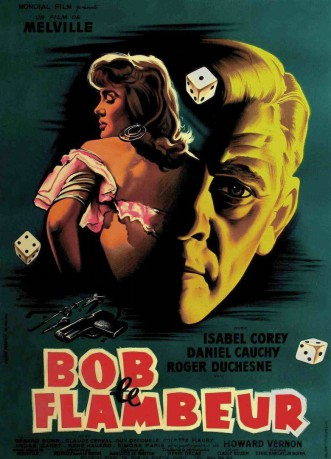

#7432 Drei Uhr nachts
Alternativ: Bob le Flambeur (Englischer Titel)
 
 IMDB-Wertung: 7.8 / 10
IMDB-Wertung: 7.8 / 10  Metascore: 0
Metascore: 0 
Der ehemalige Bankräuber und Spieler Bob ist so pleite, dass er das Deuville-Kasino bei Paris überfallen will. Bob stellt eine Gruppe Männer zusammen, damit der Coup gelingen kann. Er plant alles bis ins letzte Detail, doch es gibt einen Haken: Die Polizei wurde von der Frau eines Croupiers über den anstehenden Überfall informiert...
Jahr: 1956
Dauer: 102 Minuten
FSK: 18
Land: Frankreich Studio: Arthaus FilmverleihTonspuren:
Untertitel: Deutsch,
Auflösung: 1080p (1488x1080) Größe: 10065 MB
Genre: Thriller, Drama, Krimi
Regisseur: Jean-Pierre Melville
Drehbuch: Jean-Pierre Melville
Soundtrack:
Darsteller:
- Isabelle Corey als Anne
- Daniel Cauchy als Paulo
- Roger Duchesne als Robert 'Bob' Montagné
 Gérard Buhr als Marc
Gérard Buhr als Marc Howard Vernon als McKimmie - le commanditaire
Howard Vernon als McKimmie - le commanditaire- Jean-Pierre Melville als Récitant / Narrator , uncredited
- Guy Decomble als Le commissaire Ledru
- André Garet als Roger
- Claude Cerval als Jean - le croupier
- Colette Fleury als Suzanne - la femme de Jean
- René Havard als L'inspecteur Morin
- Simone Paris als Yvonne
- Henry Allaume als Un gangster
- Germaine Licht als Céleste Régnier - la concierge
- Yvette Amirante als La copine d'Anne
- Dominique Antoine als
- Emile Cuvelier als Un gangster
- Jannick Arvel als La deuxième fille du bar
- Annick Bertrand als La première fille du bar
- Duilio Carmine als
- Roland Charbaux als Un policier
- Albert Cuvellier als Un gangster
- Pierre Durrieu als Un gangster
- Chris Kersen als Un gangster
- Evelyne Rey als
- Jean-Marie Robain als Un joueur de poker
- André als Le directeur du casino , uncredited
- François André als Monsieur André - le directeur du casino de Deauville , uncredited
- Couty als Policier , uncredited
- Henri Decaë als Voix , uncredited
- Max Dejean als Un touriste au night club , uncredited
- Jean-François Drach als Un policier , uncredited
- François Gir als Un policier , uncredited
- Maurice Magalon als Le changeur , uncredited
- Jean-Marie Rivière als P'tit Louis - un gangster , uncredited
- Jean Rossignol als Voix , uncredited
- Louis Saintève als Un monsieur âgé au privé de Deauviille , uncredited
- André Salgues als Petit rôle , uncredited
- Ro. Tetelman als Le tailleur , uncredited
Datei: X:\1950-1959\Drei Uhr nachts (1956, FSK18, 1488x1080).mkv seit 10.11.2017
Festplatte: HD 1900-1970
 Es gibt insgesamt 141 Filme in der Gruppe '1950-1959'
Es gibt insgesamt 141 Filme in der Gruppe '1950-1959'